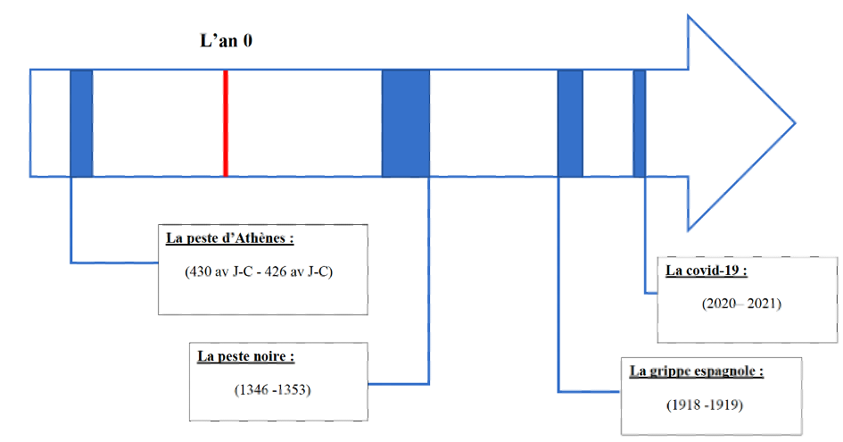

Rappel historique des maladies virales passées
Dans cette étude nous nous focalisons sur 3 maladies virales passée qui sont la Peste d'Athènes, la Peste Noire et la Grippes Epsagnol. Ces dernières exposaient déjà très clairement l'implication de la mondialisation dans la propagation de virus.
Comment se sont-elles diffusées ?
Lors de la guerre contre Spartes, Athènes est encerclée. L'approvisonnement de denrées se fit par bateaux, lesquelles débarqua un virus inconnu ; couplé à un surpeuplement et un manque d'hygiène, la ville ne surviva pas.
Une puce de rat transporte la Peste Noire à travers toute l'Europe par bateau. Sa course débute en l’actuelle Crimée ; puis se propage vers les grandes villes marchandes, telles que Constantinople, Marseille ou Londres. Plus d’un tiers de la population.
La Grippe Espagnol fut induite par les mobilisations et les rapatriements des soldats durant la première guerre mondiale, mais les ravages de la guerre camoufla les symptomes. On estime que le virus débuta en Chine
created with
HTML Website Builder .